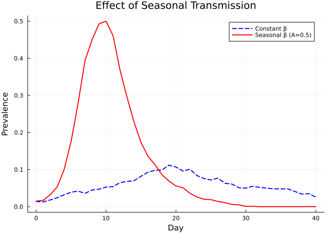
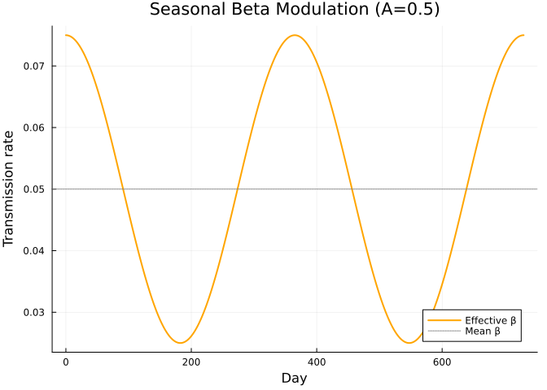
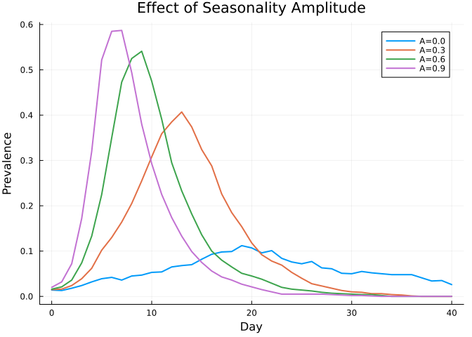
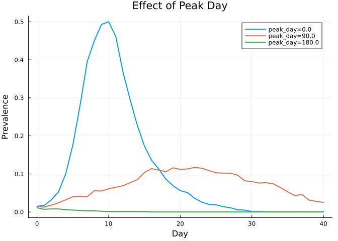
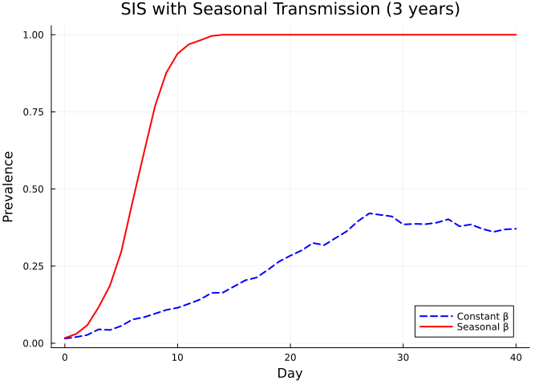
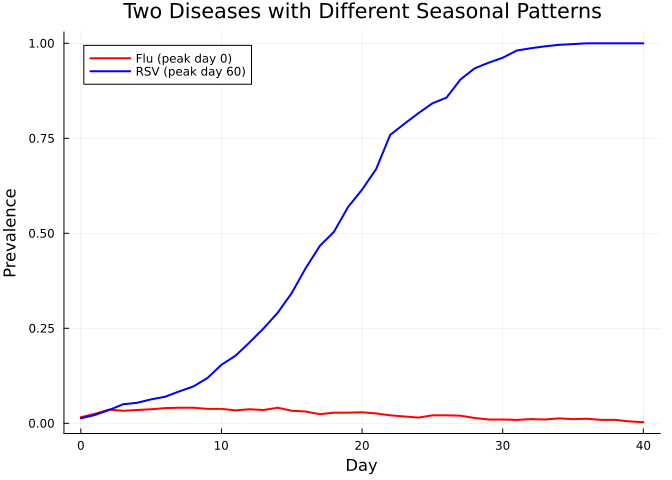

Connectors
Simon Frost
- Overview
- Baseline: constant beta
- Seasonality connector
- Comparing constant vs seasonal transmission
- Visualizing the beta modulation
- Varying seasonality amplitude
- Varying the peak day
- Seasonality with SIS dynamics
- Multi-disease simulation with connectors
- Summary
Overview
Connectors in Starsim.jl provide a way to modify disease dynamics based on external factors or cross-disease interactions. This vignette demonstrates the Seasonality connector, which modulates a disease’s transmission rate (beta) over time using a sinusoidal pattern, and shows how connectors work in multi-disease simulations.
Baseline: constant beta
First, a standard SIR simulation with constant transmission for comparison.
using Starsim
using Plots
n_contacts = 10
beta = 0.5 / n_contacts
sim_base = Sim(
n_agents = 1_000,
networks = RandomNet(n_contacts=n_contacts),
diseases = SIR(beta=beta, dur_inf=4.0, init_prev=0.01),
dt = 1.0,
stop = 40.0,
rand_seed = 42,
verbose = 0,
)
run!(sim_base)
prev_base = get_result(sim_base, :sir, :prevalence)
tvec_base = 0:length(prev_base)-1
println("Constant beta peak prevalence: $(round(maximum(prev_base), digits=4))")Constant beta peak prevalence: 0.112Seasonality connector
The Seasonality connector modulates beta using the formula:
\[\beta_{\text{eff}}(t) = \beta \times \left(1 + A \cos\!\left(\frac{2\pi(t - t_{\text{peak}})}{365}\right)\right)\]
where $A$ is the amplitude (0–1) and $t_{\text{peak}}$ is the peak_day (day of year with maximum transmission).
seasonal = Seasonality(disease_name=:sir, amplitude=0.5, peak_day=0)
sim_seasonal = Sim(
n_agents = 1_000,
networks = RandomNet(n_contacts=n_contacts),
diseases = SIR(beta=beta, dur_inf=4.0, init_prev=0.01),
connectors = seasonal,
dt = 1.0,
stop = 40.0,
rand_seed = 42,
verbose = 0,
)
run!(sim_seasonal)
prev_seasonal = get_result(sim_seasonal, :sir, :prevalence)
tvec_seasonal = 0:length(prev_seasonal)-1
println("Seasonal beta peak prevalence: $(round(maximum(prev_seasonal), digits=4))")Seasonal beta peak prevalence: 0.5Comparing constant vs seasonal transmission
plot(tvec_base, prev_base, label="Constant β", lw=2, color=:blue, ls=:dash)
plot!(tvec_seasonal, prev_seasonal, label="Seasonal β (A=0.5)", lw=2, color=:red)
xlabel!("Day")
ylabel!("Prevalence")
title!("Effect of Seasonal Transmission")
Visualizing the beta modulation
amplitude = 0.5
peak_day = 0.0
days = 0:1:(365*2)
beta_base = 0.05
beta_eff = beta_base .* (1.0 .+ amplitude .* cos.(2π .* (days .- peak_day) ./ 365))
plot(days, beta_eff, lw=2, color=:orange, label="Effective β")
hline!([beta_base], lw=1, ls=:dot, color=:gray, label="Mean β")
xlabel!("Day")
ylabel!("Transmission rate")
title!("Seasonal Beta Modulation (A=$amplitude)")
Varying seasonality amplitude
amplitudes = [0.0, 0.3, 0.6, 0.9]
p = plot(xlabel="Day", ylabel="Prevalence", title="Effect of Seasonality Amplitude")
for amp in amplitudes
conn = Seasonality(disease_name=:sir, amplitude=amp, peak_day=0.0)
sim = Sim(
n_agents=1_000, networks=RandomNet(n_contacts=n_contacts),
diseases=SIR(beta=beta, dur_inf=4.0, init_prev=0.01),
connectors=conn,
dt=1.0, stop=40.0, rand_seed=42, verbose=0,
)
run!(sim)
prev = get_result(sim, :sir, :prevalence)
plot!(p, 0:length(prev)-1, prev, label="A=$amp", lw=2)
end
p
Varying the peak day
peak_days = [0.0, 90.0, 180.0]
p = plot(xlabel="Day", ylabel="Prevalence", title="Effect of Peak Day")
for pd in peak_days
conn = Seasonality(disease_name=:sir, amplitude=0.5, peak_day=pd)
sim = Sim(
n_agents=1_000, networks=RandomNet(n_contacts=n_contacts),
diseases=SIR(beta=beta, dur_inf=4.0, init_prev=0.01),
connectors=conn,
dt=1.0, stop=40.0, rand_seed=42, verbose=0,
)
run!(sim)
prev = get_result(sim, :sir, :prevalence)
plot!(p, 0:length(prev)-1, prev, label="peak_day=$pd", lw=2)
end
p
Seasonality with SIS dynamics
Seasonality is especially visible with SIS models, where endemic transmission produces recurring waves.
sim_sis_base = Sim(
n_agents=1_000, networks=RandomNet(n_contacts=n_contacts),
diseases=SIS(beta=beta, dur_inf=4.0, init_prev=0.01),
dt=1.0, stop=40.0, rand_seed=42, verbose=0,
)
run!(sim_sis_base)
sim_sis_seasonal = Sim(
n_agents=1_000, networks=RandomNet(n_contacts=n_contacts),
diseases=SIS(beta=beta, dur_inf=4.0, init_prev=0.01),
connectors=Seasonality(disease_name=:sis, amplitude=0.5, peak_day=0.0),
dt=1.0, stop=40.0, rand_seed=42, verbose=0,
)
run!(sim_sis_seasonal)
prev_sis_b = get_result(sim_sis_base, :sis, :prevalence)
prev_sis_s = get_result(sim_sis_seasonal, :sis, :prevalence)
plot(0:length(prev_sis_b)-1, prev_sis_b, label="Constant β", lw=2, color=:blue, ls=:dash)
plot!(0:length(prev_sis_s)-1, prev_sis_s, label="Seasonal β", lw=2, color=:red)
xlabel!("Day")
ylabel!("Prevalence")
title!("SIS with Seasonal Transmission (3 years)")
Multi-disease simulation with connectors
Connectors are applied per-disease. Here we run two diseases with seasonality on one but not the other.
sim_multi = Sim(
n_agents = 1_000,
networks = RandomNet(n_contacts=n_contacts),
diseases = [
SIS(name=:flu, beta=0.05, dur_inf=3.0, init_prev=0.01),
SIS(name=:rsv, beta=0.04, dur_inf=4.0, init_prev=0.01),
],
connectors = [
Seasonality(disease_name=:flu, amplitude=0.6, peak_day=0.0),
Seasonality(disease_name=:rsv, amplitude=0.4, peak_day=60.0),
],
dt = 1.0,
stop = 40.0,
rand_seed = 42,
verbose = 0,
)
run!(sim_multi)
prev_flu = get_result(sim_multi, :flu, :prevalence)
prev_rsv = get_result(sim_multi, :rsv, :prevalence)
plot(0:length(prev_flu)-1, prev_flu, label="Flu (peak day 0)", lw=2, color=:red)
plot!(0:length(prev_rsv)-1, prev_rsv, label="RSV (peak day 60)", lw=2, color=:blue)
xlabel!("Day")
ylabel!("Prevalence")
title!("Two Diseases with Different Seasonal Patterns")
Summary
Seasonalitymodulates beta with a cosine function:β(t) = β × (1 + A·cos(2π(t - peak_day)/365))amplitudecontrols the strength of seasonal variation (0 = none, 1 = full)peak_dayshifts when peak transmission occurs- Seasonality is most visible with SIS models that maintain endemic transmission
- Each disease can have its own connector with independent parameters
- Connectors enable cross-disease interactions without modifying disease code